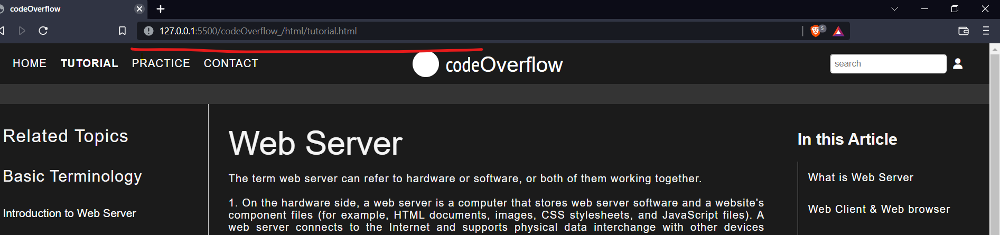

Web Page
A web page is a simple document displayable by a browser. Such documents are written in the HTML language (which we look into in more detail in other articles). A web page can embed a variety of different types of resources such as:
style information — controlling a page's look-and-feel
scripts — which add interactivity to the page
media — images, sounds, and videos.
All web pages available on the web are reachable through a unique address. To access a page, just type its address in your browser address bar:

Website
A web browser (also referred to as an Internet browser or simply a browser) is application software for accessing the World Wide Web or a local website. When a user requests a web page from a particular website, the web browser retrieves the necessary content from a web server and then displays the page on the user's device.
A web browser is not the same thing as a search engine, though the two are often confused. A search engine is a website that provides links to other websites. However, to connect to a website's server and display its web pages, a user must have a web browser installed.
Static Website
Static Web pages:
Static Web pages are very simple. It is written in languages such as HTML, JavaScript, CSS, etc. For static web pages when a server receives a request for a web page, then the server sends the response to the client without doing any additional process. And these web pages are seen through a web browser. In static web pages, Pages will remain the same until someone changes it manually.
Dynamic Website
Dynamic Web Pages:
Dynamic Web Pages are written in languages such as CGI, AJAX, ASP, ASP.NET, etc. In dynamic web pages, the Content of pages is different for different visitors. It takes more time to load than the static web page. Dynamic web pages are used where the information is changed frequently, for example, stock prices, weather information, etc.